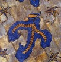
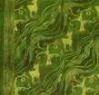
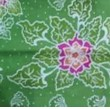
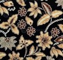
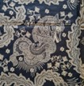
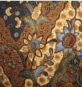
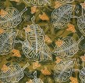
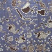

WARISAN BUDAYA INDONESIA
Keindahan Batik Jawa Timur
Jelajahi berbagai macam batik khas Jawa Timur dari Madura, Gresik, Surabaya, Jember, Tuban, Lamongan, Kediri, Tulungagung, Bojonegoro, hingga Pacitan.
Jelajahi Batik
WARISAN BUDAYA INDONESIA
Jelajahi berbagai macam batik khas Jawa Timur dari Madura, Gresik, Surabaya, Jember, Tuban, Lamongan, Kediri, Tulungagung, Bojonegoro, hingga Pacitan.
Jelajahi Batik
KENALI BUDAYANYA

Jawa Timur memiliki beragam daerah penghasil batik. Setiap daerah mempunyai karakter motif, warna, dan cerita budaya yang berbeda.
Keberagaman tersebut membuat batik Jawa Timur memiliki identitas yang unik dan menjadi salah satu kekayaan budaya Indonesia.
10 DAERAH
Batik Madura dikenal dengan warna-warna cerah dan berani serta motif flora, fauna, dan motif khas pesisir.

Batik Gresik berkembang dengan berbagai motif yang terinspirasi dari lingkungan dan budaya masyarakat pesisir.

Batik Surabaya memiliki motif yang terinspirasi dari ikon kota dan kehidupan masyarakat Surabaya.

Batik Jember banyak mengambil inspirasi dari tanaman dan kekayaan alam daerah, termasuk tembakau.
Batik Tuban terkenal dengan Batik Gedog yang berkaitan dengan tradisi kain tenun masyarakat Tuban.

Batik Lamongan memiliki motif flora dan unsur budaya lokal yang berkembang di wilayah pesisir.

Batik Kediri memiliki berbagai motif yang terinspirasi dari sejarah, alam, dan budaya masyarakat Kediri.

Tulungagung merupakan salah satu sentra batik Jawa Timur dengan berbagai motif tradisional.

Batik Bojonegoro menampilkan berbagai motif yang terinspirasi dari potensi alam dan budaya daerah.

Batik Pacitan memiliki motif khas yang terinspirasi dari alam dan budaya masyarakat Pacitan.
KEISTIMEWAAN
Setiap daerah mempunyai motif dan karakter visual yang berbeda.
Banyak motif mengambil inspirasi dari flora, fauna, dan lingkungan sekitar.
Motif batik menjadi bagian dari identitas dan budaya masyarakat daerah.